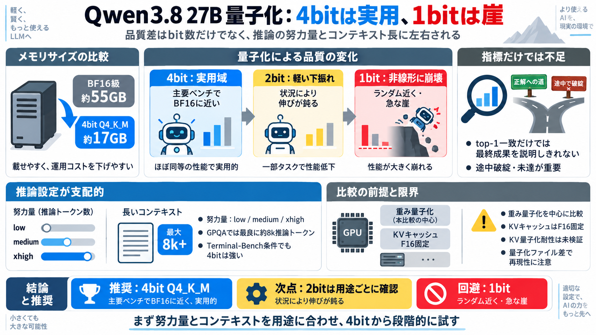

Benchmarking Qwen3.8 27B quantizations: 4-bit holds up, 1-bit collapses - Quesma Blog
Compression eventually hits a cliff. At 1 bit, the model performs around random chance on GPQA Diamond, and longer reaso…

BF16比の品質劣化は「4bitでは小さい／2bitは軽微／1bitは非線形に崩れる」。ただし“推論設定”と“コンテキスト”が支配的になり得る。
量子化の影響は「次トークン一致率（top-1）」だけでは測れない。最終成果は、予測の分岐が“途中破綻”や“未達”につながるかに依存する。
量子化（重みのbit数）は重要だが、推論時の“努力量” low/medium/xhigh とコンテキスト長で結果は大きく動く。比較がズレると「量子化のせい」に見えてしまう。
今回は「重みの量子化」の影響を主に見る設計で、KVキャッシュ形式は F16 固定。だから“KV量子化耐性”は未検証のまま残る。
GPQA Diamondでは最良スコアに約8kの推論トークンが必要。結果は量子化差より「xhighなどでどれだけ推論を頑張らせたか」に強く左右される。
レンタルGPUでは安くはないため、モデルが小さくなるほど必要メモリと実行効率が有利になり、費用が下がりやすい。とはいえ比例ではなく、運用戦略次第で最適点が変わる。
量子化より先に、low/medium/xhigh とコンテキスト長を自分の用途に合わせて最適化する（努力量：xhigh／日本語：努力量）ことで、比較の納得感が上がる。
Compression eventually hits a cliff. At 1 bit, the model performs around random chance on GPQA Diamond, and longer reaso…
Published results include: | Benchmark | Qwen3.8-27B | --- | | Terminal-Bench 2.1 | 73.0 | | SWE-bench Pro | 61.7 | | …
╭───────────────────────────────────────────────────────────────────────────────────────────────────────────────────────…
Skip to main contentBenchmarking Qwen3.8 27B quantizations: 4-bit holds up, 1-bit collapses : r/LocalLLaMA Open menu Op…
Full-precision Qwen3.8-2.4T-A95B requires 4.9TB of storage and 1-bit Unsloth Dynamic GGUFs takes 397GB (91% smaller), an…